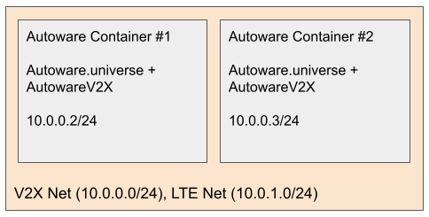
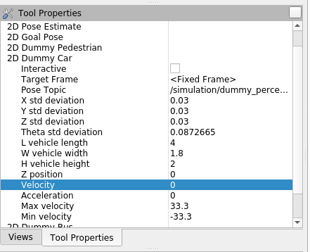
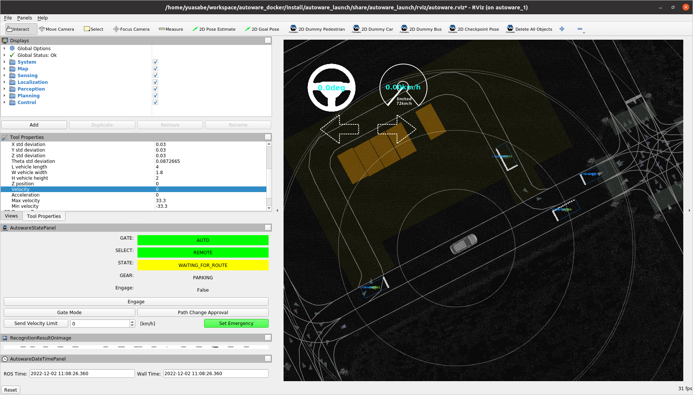
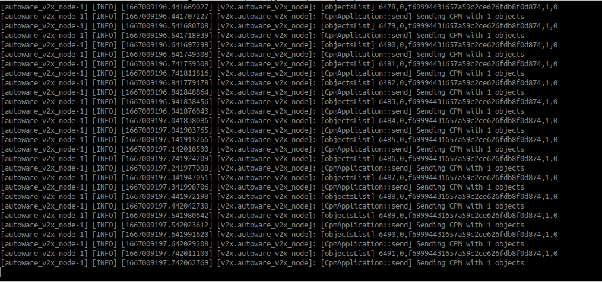
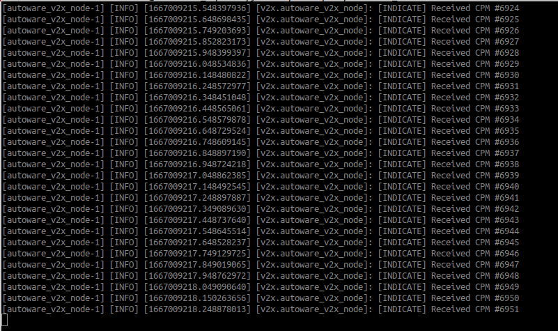
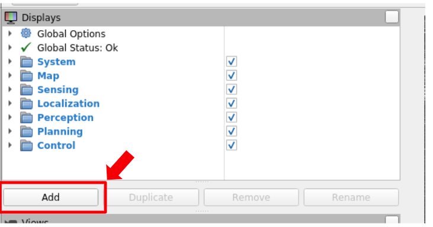
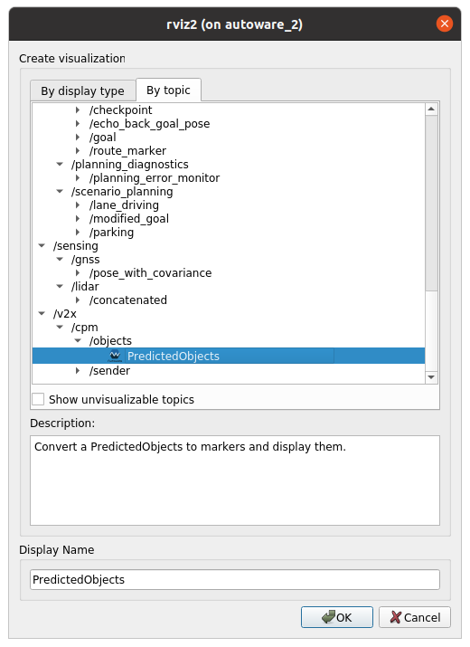
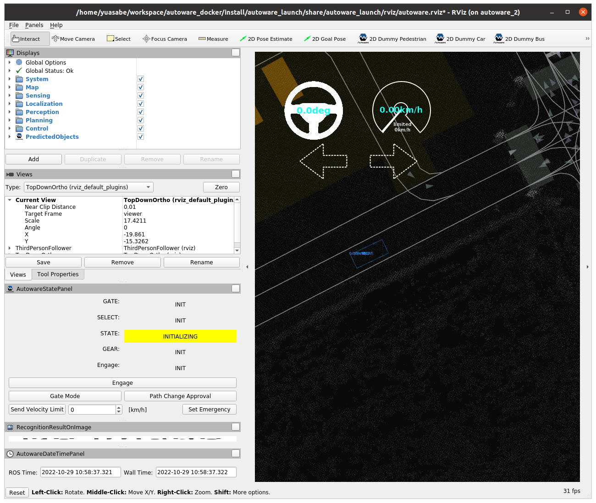

Running AutowareV2X in the Planning Simulator#
Simulations can be an easy way of verifying the functionality of AutowareV2X before an actual field test.
AutowareV2X can be run in a simulation environment using Autoware's Planning Simulator. An ITS-S is composed of Autoware as the autonomous driving stack and AutowareV2X as its V2X communication stack. Each ITS-S is executed inside a Docker container, and the wireless communication medium between ITS-Ss are modeled with Docker networks. A dynamic ITS-S is defined as a CAV, while a static ITS-S is considered a RSU. Perceived Objects are sent out on the network as CPMs.
Note
Make sure you have completed Autoware's Planning Simulator Tutorial before continuing.
In order to test both the sender and receiver functionalities, we will need at least two ITS-S instances.
The Docker environment to create#
We will be creating the Docker environment as depicted in the figure below. There will be two Docker containers to represent the two ITS-Ss, each of which includes Autoware.universe and AutowareV2X. They will both be a part of the Docker network called v2x_net with the subnet 10.0.0.0/24. "Autoware Container #1" and "Autoware Container #2" will be described as autoware_1 and autoware_2 respectively.

Create a Docker network for V2X communication#
docker network create --driver=bridge --subnet=10.0.0.0/24 v2x_net -o com.docker.network.bridge.name="v2x_net"
Launch two ITS-S containers#
Note
Here, we will use a Rocker extension called off-your-rocker.
Install off-your-rocker by running the below:
python3 -m pip install off-your-rocker
In one terminal, use rocker to launch container autoware_1:
rocker --nvidia --x11 --user --privileged --volume $HOME/workspace/autoware_docker --volume $HOME/data --network=v2x_net --name autoware_1 --oyr-run-arg "--ip 10.0.0.2 --hostname autoware_1" -- ghcr.io/autowarefoundation/autoware-universe:latest-cuda
In another terminal, use rocker to launch container autoware_2:
rocker --nvidia --x11 --user --privileged --volume $HOME/workspace/autoware_docker --volume $HOME/data --network=v2x_net --name autoware_2 --oyr-run-arg "--ip 10.0.0.3 --hostname autoware_2" -- ghcr.io/autowarefoundation/autoware-universe:latest-cuda
Run Planning Simulator#
Run the Planning Simulator in both autoware_1 and autoware_2.
In autoware_1:
cd ~/workspace/autoware_docker
source install/setup.bash
export AWID=1 # autoware_1
source ~/workspace/autoware_docker/src/v2x/autowarev2x/setup.sh
ros2 launch autoware_launch planning_simulator.launch.xml map_path:=$HOME/data/maps/sample-map-planning vehicle_model:=sample_vehicle sensor_model:=sample_sensor_kit
Also, in autoware_1, set the ego-vehicle position by clicking 2D Pose Estimate.
Try adding some dummy cars by clicking 2D Dummy Car.
Note that you can make the dummy cars to be static by changing its Velocity to 0 in the Tool Properties pane.


In autoware_2:
cd ~/workspace/autoware_docker
source install/setup.bash
export AWID=2 # autoware_2
source ~/workspace/autoware_docker/src/v2x/autowarev2x/setup.sh
ros2 launch autoware_launch planning_simulator.launch.xml map_path:=$HOME/data/maps/sample-map-planning vehicle_model:=sample_vehicle sensor_model:=sample_sensor_kit
Run AutowareV2X#
In another terminal, connect to the autoware_1 and autoware_2 containers, and start AutowareV2X in both of them. We will set autoware_1 to be the CPM sender, and autoware_2 to be the CPM receiver.
In autoware_1:
docker exec -it autoware_1 bash
sudo su
cd workspace/autoware_docker
source install/setup.bash
export AWID=1
source ./src/v2x/autowarev2x/setup.sh
ros2 launch autoware_v2x v2x.launch.xml network_interface:=eth0
You should see the command output like below.
It shows that you are "Sending CPM with n objects", and the [objectsList] line describes the following information: cpm_num, objectID, object.uuid, object.to_send, object.to_send_trigger.

In autoware_2:
docker exec -it autoware_2 bash
sudo su
cd workspace/autoware_docker
source install/setup.bash
export AWID=2
source ./src/v2x/autowarev2x/setup.sh
ros2 launch autoware_v2x v2x.launch.xml network_interface:=eth0 is_sender:=false
When both the sender and receiver is launched, you should see that the receiver (autoware_2) will start receiving CPMs like below.

Show CPM-shared objects in RViz#
- Press "Add" from the Displays Panel
 - Choose "By topic", then select PredictedObjects from /v2x/cpm/objects
 - The CPM-shared objects are shown in Rviz for
autoware_2!

Run scenarios#
In order to run scenarios, the scenario_simulator_v2 must be installed:
- Launch new Autoware container
rocker --nvidia --x11 --user --volume $HOME/workspace/autoware_docker --volume $HOME/data -- ghcr.io/autowarefoundation/autoware-universe:latest-cuda - Add
simulator.reposcd workspace/autoware_docker vcs import src < simulator.repos - Install dependent ROS packages
sudo apt update rosdep update rosdep install --from-paths src --ignore-src --rosdistro $ROS_DISTRO -r - Rebuild workspace
colcon build --symlink-install --cmake-args -DCMAKE_BUILD_TYPE=Release - Download scenario.
gdown -O ~/data/scenarios/ 'https://drive.google.com/uc?id=1FXwSSWeFDTMz7qsG-J7pyJA6RgjksqCy' - Launch
scenario_test_runnerand specify scenario.ros2 launch scenario_test_runner scenario_test_runner.launch.py map_path:=$HOME/data/maps/sample-map-planning sensor_model:=sample_sensor_kit vehicle_model:=sample_vehicle scenario:=$HOME/data/scenarios/busy_kashiwa_scenario.yaml launch_autoware:=true